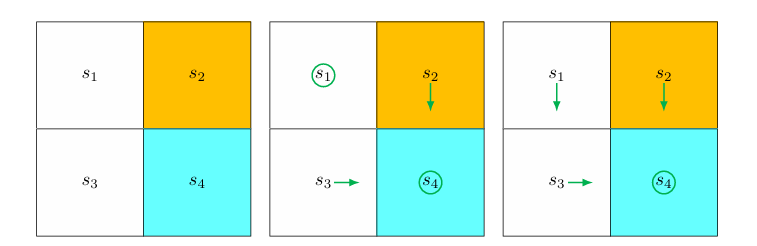
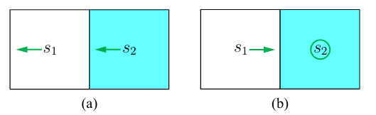
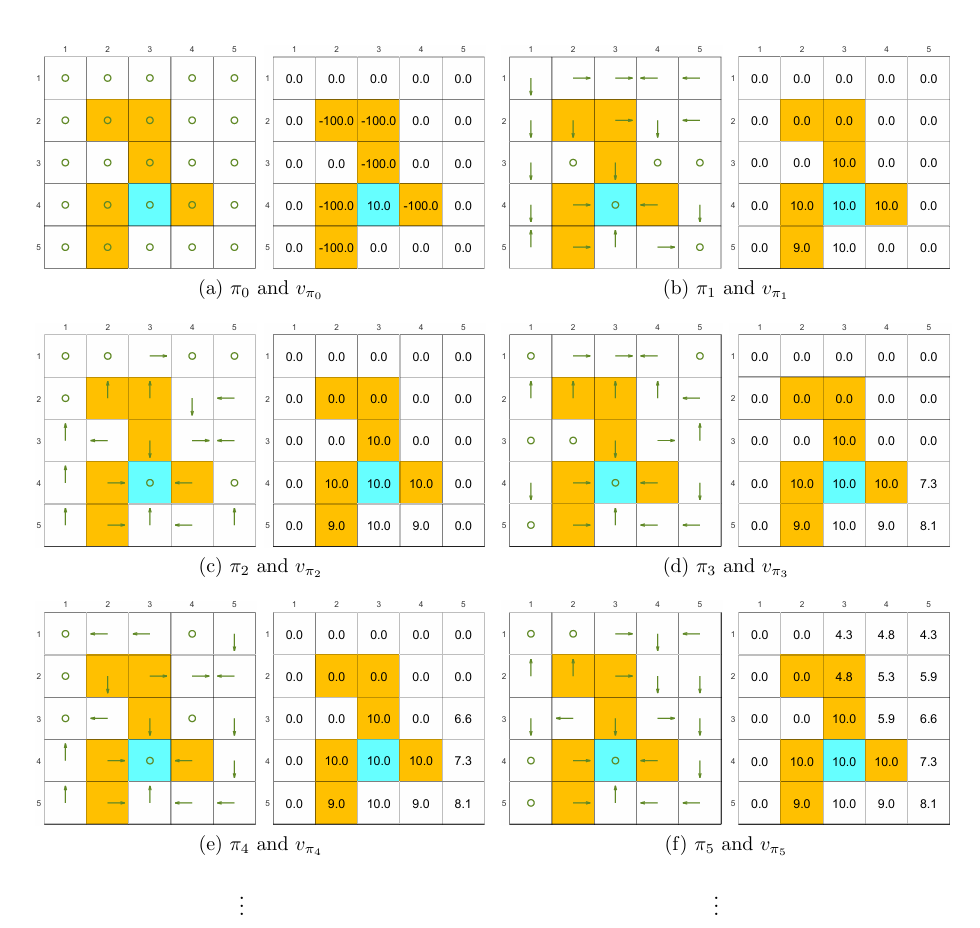
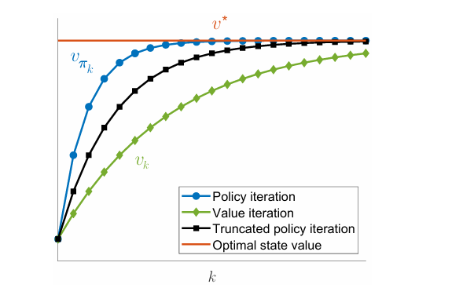

第4章 价值迭代与策略迭代
本章讨论三类能够求解最优策略的动态规划算法：价值迭代、策略迭代与截断策略迭代。三者都建立在已知系统模型的前提下，即已知状态转移概率与奖励分布，因此属于基于模型的方法。它们既是贝尔曼方程与贝尔曼最优方程的直接算法化形式，也是后续无模型强化学习算法的重要思想来源。三种算法虽然形式不同，但都围绕同一核心展开：价值函数与策略并不是彼此独立更新，而是在反复交替中相互推动、逐步逼近最优解。
4.1 价值迭代
4.1.1 基本思想
价值迭代直接对应于贝尔曼最优方程的求解过程。设 为所有可行策略构成的集合， 为策略 对应的即时奖励向量， 为策略 对应的状态转移矩阵， 为折扣因子，则价值迭代写为
该迭代由压缩映射理论保证收敛到最优状态价值 ，与之对应的贪婪策略序列也收敛到某个最优策略。
从计算结构看，每一轮迭代包含两个步骤。
- 第一步是在当前价值估计 的基础上，对每个状态比较各可行动作对应的一步 Bellman 更新值。
- 第二步取这些候选值中的最大者，作为新的状态价值 。
4.1.2 逐元素形式与贪婪更新
对于任意状态 与动作 ，在第 轮迭代中，基于当前价值估计 ，定义动作 对应的一步 Bellman 更新值为
其中， 表示在状态 执行动作 后，转移到下一状态 并获得奖励 的概率。该量表示：若当前在状态 选择动作 ，则其一步即时奖励与折扣后续价值之和的期望，就是在当前价值估计 下该动作对应的候选更新值。
在状态 处，新的策略通过最大化 来选择动作。记
则对应的贪婪策略为
对每个状态 ，价值迭代先在当前价值估计 下计算各动作对应的一步 Bellman 更新值 ，再取其中的最大者作为新的状态价值，即
若最大值由多个动作同时达到，则任选其一作为贪婪动作即可，这不会影响价值迭代收敛到最优状态价值函数。
因而，从逐元素的角度看，==价值迭代的基本逻辑是：基于当前 计算各动作的候选更新值，并将其中最大者写为新的状态价值 。==
graph TD A["当前价值 v_k(s)"] --> B["计算各动作价值 q_k(s,a)"] B --> C["在各动作价值中取最大值"] C --> D["更新状态价值 v_{k+1}(s)"]
4.1.3 中间量的性质
价值迭代中的序列 虽然最终收敛到最优状态价值函数 ，但在收敛过程中， 一般并不等于某个固定策略 的真实状态价值函数 。也就是说， 通常不满足任何固定策略所对应的 Bellman 方程，而只是算法在迭代过程中产生的价值近似。相应地，由 计算得到的
也通常不是某个固定策略下的真实动作价值函数 ，而只是基于当前价值近似 所得到的一步 Bellman 候选更新值。
这一区分构成了价值迭代与策略迭代的重要差别。价值迭代用“近似值驱动的贪婪更新”推进，而不是在每一轮都精确评估某个策略。
4.1.4 算法实现
价值迭代的实现条件是系统模型已知，即对所有状态—动作对 ，已知奖励分布 与状态转移分布 。算法以一个初始猜测 为起点，反复执行以下过程：
- 对每个状态 ，对每个可选动作 计算 。
- 在每个状态上选取使 最大的动作，构造贪婪策略 。
- 将每个状态的值更新为最大价值动作对应的动作价值，即 。
- 当相邻两轮价值向量之差足够小，即 低于预设阈值时停止。
停止条件反映的是数值计算上的近似收敛，而不是必须等到理论上的无限次迭代。
4.1.5 二乘二网格例子

设环境由四个状态 构成，其中 为目标区域，另有一个禁区。边界与禁区奖励均为 ，目标奖励为 ，折扣因子为 。每个状态可执行五种动作，分别对应不同的移动方式与停留。对于任一状态—动作对， 的形式都可写成“即时奖励加折现后的下一状态价值”。例如，在某些动作下，若会撞到边界，则对应项为 ；若进入目标，则对应项为 ；若无即时奖惩，则对应项为 。
初始值取为
在第0轮迭代中，把代入各状态、各动作的更新公式，就可以算出：在每个状态下，如果分别采取不同动作，当前状态会得到哪些候选更新值。然后，对每个状态取这些候选值中的最大者，作为新的状态价值。由此得到
相应的贪婪策略为：在 处选择使价值不下降的动作，在 与 处朝向目标推进，在 处选择维持目标收益的动作。由于 处存在并列最大动作，初次更新时可能出现“停留”这一并非全局最优的局部选择，但这并不影响后续收敛。
在第 轮中，将
继续代入动作备份式，可得新的贪婪策略已经在四个状态上都朝向最优方向推进，并得到
该例中只需两轮迭代就已经得到最优策略。较复杂环境中，往往仍需继续迭代，使价值向量数值上趋于稳定。
这个例子揭示了价值迭代的运行机制：目标附近较高的价值会通过反复更新逐层向外传播，而策略也会随着这些价值变化，逐步转向能够带来更高长期回报的动作。
Note
对每个状态 ，价值迭代只计算从该状态出发、各个动作在“一步转移 + 后续价值估计”意义下的更新值，并取其中最大者作为新的状态价值。这里所谓“只更新一步”，是指每次只向前看一个状态转移层次，而不对某个策略做完整的长期评估。
4.2 策略迭代
4.2.1 基本结构
策略迭代并不直接把贝尔曼最优方程写成单一迭代式，而是把“求最优策略”拆成两个交替阶段：先精确评估当前策略，再基于评估结果改进策略。
设第 轮当前策略为 ，则第一步是策略评估。其目标是求出该策略对应的真实状态价值 ，满足贝尔曼方程
第二步是策略改进。在得到 之后，构造对 贪婪的新策略：
价值迭代与策略迭代都包含“价值更新”与“策略更新”，但两者在价值更新的精度上不同。价值迭代每一轮只求解一步动作价值并进行更新；策略迭代则在每一轮都把当前策略评估到足够精确，再进行策略改进。
4.2.2 策略评估的求解方式
策略评估要求解的是线性方程组。理论上可以写成闭式解
该形式有利于理论分析，因为它直接表明只要 可逆，就能唯一确定状态价值。但在实现层面，显式求逆通常代价较高，因此更常用的是迭代求解：
其中， 表示对 的第 次近似。从任意初值出发，都有
这意味着策略迭代本身是一个外层迭代，而其策略评估步骤内部又嵌套了一个内层迭代。理论上内层迭代需要无限次才能得到精确状态价值，实际计算中则在达到预设阈值或达到预设步数后终止。
4.2.3 策略改进性质
策略迭代的关键理论基础是策略改进引理。若新策略满足
则有
即对任意状态 都成立 。
这一性质说明，基于当前策略价值函数进行贪婪改进，不会使状态价值下降。证明思路依赖于两点。
- 其一， 与 都满足各自策略的贝尔曼方程。
- 其二，转移矩阵 是非负随机矩阵，反复作用后不会破坏逐元素不等式，同时折扣因子 随 增大趋于零。于是可把两者差值压缩到零以下，从而得到逐元素不等式。
4.2.4 收敛到最优策略
策略迭代生成一列策略
以及与之对应的一列状态价值
由策略改进引理可知，这列价值函数单调不减；又由于任意策略价值都不会超过最优状态价值 ，因此有
单调有上界的数列必然收敛。进一步将策略迭代与价值迭代进行比较，可以证明该极限恰好是 ，因此策略序列也收敛到某个最优策略。
这一比较同时揭示了两类算法的关系：若从相同初始条件出发，策略迭代由于在每次改进前进行了更充分的策略评估，通常比价值迭代更快逼近最优解，但单轮计算量也更大。
4.2.5 逐元素形式与实现
策略迭代的实现也需写成逐元素形式。
策略评估的元素形式为
该式表示：在状态 处，先按当前策略 对动作求期望，再对奖励与下一状态求条件期望。
在策略改进阶段，定义当前策略下的真实动作价值
于是最优改进动作满足
对应的新策略写为
与价值迭代不同， 是在真实状态价值 基础上定义的，因此是严格意义下的动作价值函数。
4.2.6 两状态例子

考虑一个只有两个状态的环境，动作集合为
分别表示向左移动、保持不动、向右移动。边界奖励为 ，目标奖励为 ，折扣因子为 。初始策略并不朝向目标推进。
在策略评估阶段，需要求解
由第一式得
代入第二式得
若采用迭代形式，从初值
出发，则有
数值逐步逼近精确解 。
在策略改进阶段，将 与 代入各动作价值：
- 在 处，三种动作的价值分别为 、、。
- 在 处，三种动作的价值分别为 、、。
因此改进后的策略为：在 处向右移动，在 处保持不动。该策略已是最优策略。这个例子表明，在简单环境中，策略迭代可能只需一次“评估—改进”循环就能到达最优解。
4.2.7 五乘五网格中的传播现象

在更复杂的五乘五网格环境中，设边界奖励为 ，禁区奖励为 ，目标奖励为 ，折扣因子仍为 。从随机初始策略出发，策略迭代最终仍能收敛到最优策略。整个演化过程体现出两个稳定规律。
第一，距离目标较近的状态会更早找到正确动作方向。原因在于这些状态更容易直接感受到目标带来的高回报，其策略改进先发生在局部；更远的状态只有在近处状态已经形成通往目标的有效路径后，才能通过这些中间状态获得更高的长期回报，从而完成改进。
第二，状态价值会形成沿空间分布的梯度结构。越接近目标的状态，其价值越大；越远离目标的状态，其价值越小。原因不在于远处状态无法到达目标，而在于到达目标所需步数更多，正回报被折扣得更严重。因此，即使最终策略都是“走向目标”，不同起点的最优状态价值仍显著不同。
该现象揭示了折扣因子在空间中的作用方式：价值并不是单纯表示“能否成功”，而是表示“在时间折扣下成功的长期收益有多大”。
4.3 截断策略迭代
4.3.1 价值迭代与策略迭代的统一视角
截断策略迭代提供了一个统一框架，用来解释价值迭代与策略迭代之间的关系。设两种算法从相同初始条件出发，并满足
在第一轮中，两者都会基于同一个价值函数进行贪婪策略更新，因此得到相同的 。真正的差异发生在接下来的价值更新步骤：
- 价值迭代只做一次备份：
- 策略迭代则把 评估到收敛，求解
若把策略迭代的评估过程显式写成内部迭代，并令初值取为前一轮近似值，则有
此时就得到统一解释：
- 若只运行一次内部评估迭代，即 ，就得到价值迭代。
- 若运行到收敛，即 ，就得到策略迭代。
- 若运行有限多次，即 ，就得到截断策略迭代。
graph TD A["价值迭代"] --> B["每轮只做 1 次策略评估备份"] C["截断策略迭代"] --> D["每轮做有限次策略评估备份"] E["策略迭代"] --> F["每轮把策略评估到收敛"] B --> G["更新快但单步信息少"] D --> H["在计算量与收敛速度之间折中"] F --> I["单轮计算重但评估更充分"]
因此，价值迭代与策略迭代并不是彼此孤立的两种算法，而是同一条“策略评估深度”轴上的两个极端点。
4.3.2 算法形式
截断策略迭代的外层结构与策略迭代相同，仍由“策略评估—策略改进”两步组成。差别仅在于策略评估阶段不再追求精确求解 ，而是只做有限步内部迭代。
在第 轮中，先设评估初值为上一轮近似值 ：
然后执行有限次评估迭代：
当内部迭代达到预设次数 后，令
再基于这个近似价值进行贪婪改进。对每个状态—动作对定义
并取
再构造
4.3.3 截断评估中的中间值
在截断策略迭代中， 与最终采用的 一般都不是某个策略的真实状态价值。只有当内部评估迭代运行到无限次、真正求出 时，它们才成为精确状态价值。因此，截断策略迭代中的价值量本质上是“策略价值的近似”，而非“当前策略的精确评估”。
这一区别使它在性质上介于价值迭代与策略迭代之间：它不像价值迭代那样只做一步近似，也不像策略迭代那样每轮都精确求解。
4.3.4 改进趋势与数值直觉
若在某一轮评估开始时能够取到前一轮真实策略价值，即
则内部评估序列满足逐步改进性质：
其核心原因在于，相邻两步的差值满足递推关系
而转移矩阵的非负性保证这种改进在逐元素意义下不会反向。实际算法中无法直接获得 ，只能使用上一轮近似值 作为替代，因此这一命题更多体现为收敛机制上的启发：在每轮中多做若干次评估，通常能够为下一次策略改进提供更可靠的价值基础。
4.3.5 计算效率与收敛速度的折中

截断策略迭代的优势来自对“单轮代价”和“总体迭代轮数”的平衡。
若把每轮评估做得极浅，对每个状态只做一次更新，单轮计算很便宜，但总体收敛会较慢，这就是价值迭代的情形。若把每轮评估做得极深，直到精确求出当前策略价值，单轮推进非常充分，但计算量大，这就是策略迭代的情形。截断策略迭代通过在两者之间选择一个有限评估深度，使单轮成本适中，同时整体收敛速度常优于纯价值迭代。
经验上，内部评估步数取“少量但不为一”的设置往往较合适。评估过少，无法充分利用当前策略的信息；评估过多，则额外计算不一定带来同等幅度的收敛加速。
4.4 本章总结
价值迭代、策略迭代与截断策略迭代都以价值与策略的交替更新为核心。它们的差异并不在于目标不同，而在于每一轮中价值更新的精确程度不同。
价值迭代直接对应贝尔曼最优方程的压缩映射求解过程。它在每轮中根据当前近似值进行贪婪策略更新，再执行一次价值更新。算法结构最紧凑，理论收敛性由压缩映射定理直接保证。
策略迭代先精确评估当前策略，再在其基础上进行贪婪改进。由于每一轮都以真实策略价值为依据，新策略的价值不会低于旧策略，因而状态价值序列单调上升并最终到达最优状态价值。
截断策略迭代把策略评估的深度作为可调参数，将前两者纳入统一框架。内部评估只做一次时得到价值迭代，做到收敛时得到策略迭代，取有限中间值时则形成一种兼顾效率与稳定性的折中方案。
三种算法共享同一思想：价值更新影响策略改进，策略改进又反过来改变后续价值更新的方向。这种价值与策略之间持续交替、彼此牵引的思想，就是广义策略迭代。
4.5 常见辨析
4.5.1 价值迭代是否保证得到最优策略
价值迭代保证收敛到最优状态价值，并由此诱导出最优策略。其理论依据是贝尔曼最优算子的压缩映射性质。
4.5.2 价值迭代中的中间值是否是真实状态价值
价值迭代中的 一般不是任何策略的真实状态价值，因为它通常不满足某个固定策略的贝尔曼方程。它只是朝最优值逼近的中间近似量。
4.5.3 策略迭代中是否嵌套了另一个迭代算法
策略迭代在策略评估阶段确实嵌套了一个用于求解贝尔曼方程的内部迭代。外层迭代负责改进策略，内层迭代负责评估当前策略。
4.5.4 策略迭代中的中间值是否是真实状态价值
若策略评估阶段被计算到收敛，则每一轮得到的 都是真实状态价值，因为它们正是当前策略贝尔曼方程的解。这是策略迭代与价值迭代在语义上的根本区别之一。
4.5.5 截断策略迭代中的中间值是否是真实状态价值
截断策略迭代中的中间值一般不是真实状态价值，只是当前策略价值的近似。只有当内部评估做到收敛时，才与真实 一致。
4.5.6 截断策略迭代与价值迭代、策略迭代的关系
截断策略迭代是两者的统一母体。价值迭代对应“每轮评估一步”，策略迭代对应“每轮评估到收敛”，截断策略迭代则对应“每轮评估有限步”。
4.5.7 截断策略迭代中内部评估应取多少步
内部评估步数并不存在统一最优常数，它依赖于状态空间规模、模型结构和计算预算。一般规律是取少量有限步以提升整体收敛效率，而非在每轮中都追求完全精确。
4.5.8 广义策略迭代的含义
广义策略迭代不是某个单独的算法名称，而是一个统摄性思想：价值估计与策略改进相互交替、共同推进。大量强化学习算法都可视为这一思想在不同信息条件与函数表示方式下的具体实现。
4.5.9 动态规划、基于模型强化学习与无模型强化学习的关系
本章算法通常被归入动态规划方法，因为它们直接依赖已知系统模型。强化学习中的“基于模型”并不等于“外部直接给定真实模型”，而是指算法在学习过程中利用数据估计模型并依赖该模型进行决策；“无模型”则指学习过程不显式估计状态转移与奖励模型，而是直接从数据中学习价值、策略或两者兼具的结构。动态规划方法在形式上与基于模型方法最接近，但其前提更强，即模型本身已知。